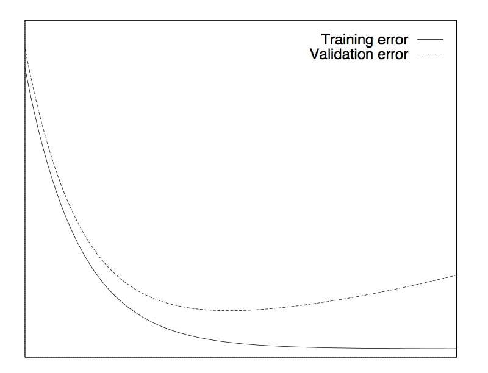
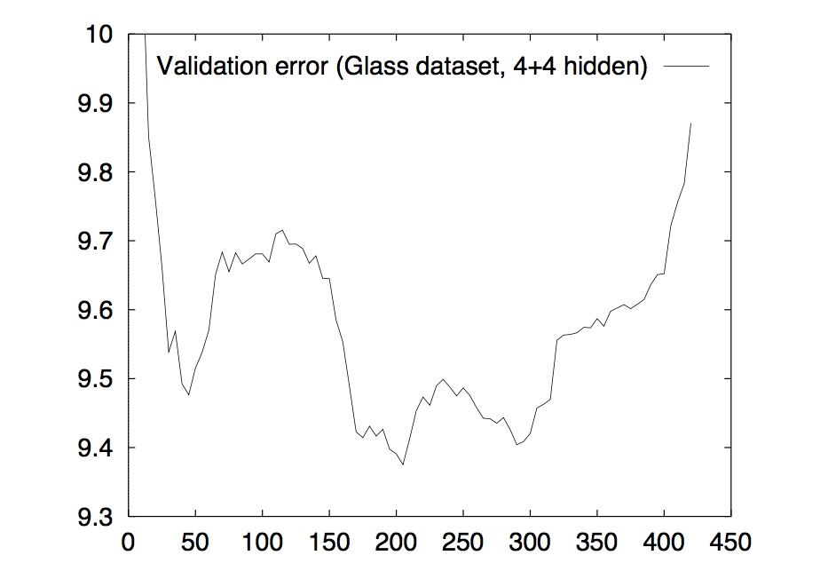

1. early stopping简介
1.1 介绍
在机器学习中经常会遇到过拟合的问题，特别是对于神经网络这种参数非常多，表达能力非常强的复杂模型来说。经常就是随着训练过程的迭代，loss在训练数据上越来越小。看上去我们的模型越来越精确了，但是实际情况却是，我们的模型的泛化能力经常会变的越来越差，也就是说对于新的数据，模型的表现并不见的会好。
通常解决过拟合都是设法简化模型，这可以通过减少模型的参数个数或者减少单个参数的大小。
减少模型的参数个数，决策树里的剪枝，CNN里的weight sharing等都属于这种方法。
减少单个参数的大小，回归里的L1，L2正则化，nn里的weight decay等和我们本文要讲的early stopping都属于这种方法。
1.2 基本的early stopping
最基本的early stopping就是将训练数据分出一部分作为验证集，然后每次训练迭代结束时，在验证集上检验一下模型的精度，作为模型的泛化误差。理想情况下，随着训练进行，训练误差越来越小，验证集的误差也越来越小，直到某个时间点时，出现过拟合，然后在验证集上误差开始上升。这个时候我们就停止训练，采用上一次训练的模型作为最终模型。

这种方法是假设验证集和真实情况是符合同样的分布，模型在验证集上的误差就是泛化误差的一种估计。从而避免了在训练集上一味追求高精度而产生的过拟合。
1.3 真实情况
如果真的损失函数曲线都像上图那样平滑，那自然基本的early stopping当然是完全够用的。但是现实中，往往是如下图这样的非常不平滑的。

我们可以看到，这其中有非常多的局部最小值。而且在validation error达到最小值之前，它发生了多次的上升下降的波动。这就导致我们很难取舍early stopping点，取得早了可能错过了后续的更优点，取得晚了可能已经发生过拟合了，而且也会导致效率下降，进行了更多次无用的训练。本文就是针对这样的难点，讨论一下到底应该怎样更有效的进行early stopping。
2 怎样更好的使用early stopping
我们想知道什么时候应该停止训练，就需要有对应的stopping标准。通常情况下我们所看中的就是最低的泛化误差和最好的性价比（例如：给定误差下所需要的最少的训练次数，给定训练时间的情况下所能获得的最低误差）。
2.1 常用的stopping标准
stopping标准有很多，这里考虑其中的三种。在介绍它们之前，先给出一些基本定义。E为损失函数（或者说误差），\(E_{tr}(t)\)是在epoch t时的训练误差，\(E_{va}(t)\)是在epoch t时的验证误差，\(E_{te}(t)\)是在epoch t时的测试误差。不过真实情况下，测试误差通常是不知道的，是未知的新数据。
2.1.1 第一类标准(GL)
定义epoch t内最优的验证误差为\(E_{opt}(t)\):
接着再定义一个generalization loss，它是一个相对泛化误差与最优误差的比：
这个定义表示当前epoch t时获得的验证误差与过去的t个epoch里的最优验证误差的比，显然这个值越大，说明越可能出现了过拟合，应该进行early stopping。
于是可以得到第一个stopping的标准：
当GL超过一个阈值的时候，进行early stopping
定义为：
\(GL_\alpha\): 在epoch t时如果发现\(GL(t) > \alpha\)则停止训练。
2.1.2 第二类标准(PQ)
通常情况下，如果训练误差还是处于下降迅速的情况下，我们并不希望此时根据第一类标准过早的让训练终止。因为在训练误差下降迅速的时候，GL有很大概率会在随后的训练过程中被修复，重新下降。我们的假设是过拟合只发生在训练误差已经下降很缓慢的情况下。
转化为公式，我们定义一个长度为k的训练序列组，用来表示n+1, n+2, ..., n+k的k个epoch的训练情况，其中n是k的整数倍，随着训练过程进行，在进行了一系列的训练序列组之后，得到：
可以看出，这个值体现是当前训练的稳定程度，如果训练误差处于剧烈变化的时候，这个值就偏大，如果趋于平稳，则这个值偏小。于是可以用这个值的大小来表示当前训练所处的阶段，结合第一类标准中的\(GL_\alpha\)，可以得到第二个stopping的标准：
使用GL和progress的比值
定义为：
\(PQ_\alpha\):在epoch t时的训练序列组中有，\(\frac{GL(t)}{P_k(t)}>\alpha\)则停止训练。
由于\(GL(t)\)越大越可能出现过拟合，而\(P_k(t)\)越小越说明训练已经趋于稳定，所以说比值越大说明越可能出现的情况时，训练已经稳定下出现的过拟合。因此使用比值作为early stopping的标准是合理的。
2.1.3 第三类标准(UP)
第三类标准和之前两种都截然不同，根据的是：
当GL在连续的s个训练序列组中增长
这个想法根据的是当验证集的误差在过去的连续s个训练序列组上增长了不止一次，我们假设这样的现象已经说明过拟合开始了，而不管此时的GL到底是大是小。
尽管有这些标准在限制，但是还是无法保证算法的终止。通常我们可以设置最大的epoch数，或者指定当progress小于0.1时强制进行early stopping，选择当前获得的在验证集上最佳的模型。
2.2 如何选择early stopping的准则
总体上说不同的准则之间差别不大，但是慢的准则要好于快的准则，但是也要权衡所需要的时间。 作者随后总结了如下一些准则：
- 除非耗费大量时间获取少量的模型精度改善是有必要的（eg: 4%的表现提升需要耗费4倍的时间），否则就使用快速的early stopping准则。
- 要想最大概率找到好的结果(相对的是获取最佳的平均表现)，使用GL准则
- 获取最佳的平均表现，如果过拟合不严重就使用PQ，否则用UP
参考资料
[1] Early Stopping but when - Lutz Prechelt